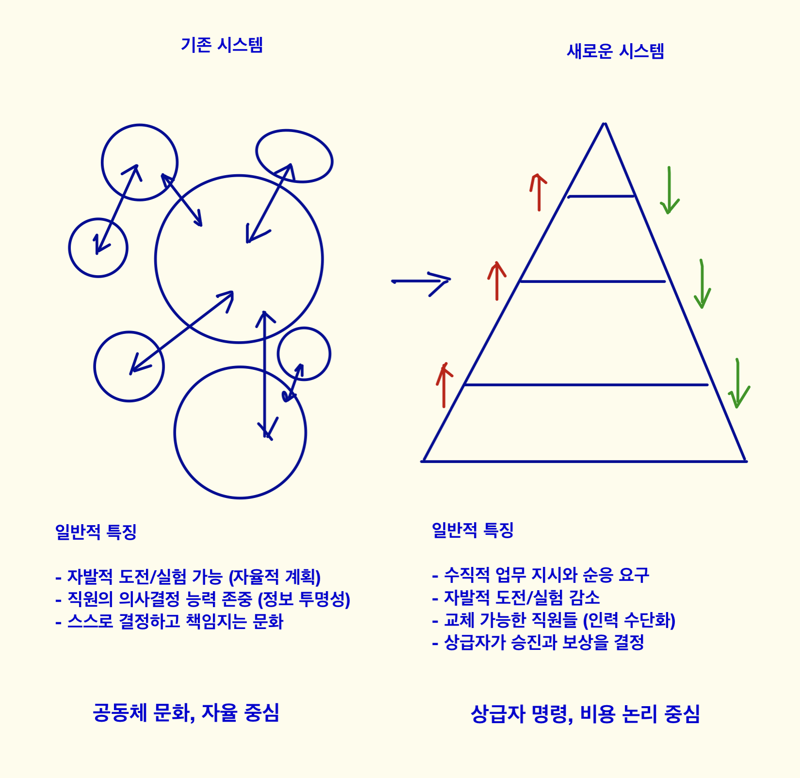

2. 근무자가 마주할 수 있는 변화들 2
피라미드
- 기존의 다원적, 분권적 시스템은 점차 피라미드 형태로 변화한다.- 상급자일수록 가장 올바른 판단을 할 수 있다고 여겨지고, 하급자는 상급자의 지시와 명령을 받는다.
- 하급자가 상급자의 지시에 동의하지 않으면, 평가-보상-심리적 안정감 등 모든 면에서 불이익을 당할 수 있다.
- 주요 프로젝트의 성과는 상급자가 한 것으로 인정받기가 더 쉬워진다.
- 상급자가 주요 프로젝트를 이끄는 존재이므로(라고 믿으므로), 필요하면 하급자 직원을 교체할 수 있다.

직원이 잃어버릴 수 있는 가치들
- 자신이 관심이 있는 영역에 도전해볼 수 있는 기회- 자발적으로 계획을 수립하고, 그것을 실행하는 업무 방식
- 누구라도 합리적 근거가 있으면 자신의 주장을 말하고 실행할 수 있는 기회
- 직원들이 직급과 무관하게 대등한 위치에서 토론하고, 다같이 일하는 목적에 공감할 수 있는 기회
(피라미드에서는 대부분 상급자에게서 승인된 것을 실행할 수 있으며,
인건비 절감이란 하급자가 지시받은 일을 빠르게 완수하는 것과 같다.
직원은 지시받은 것 이외에 다른 것을 할 여유가 없다.)